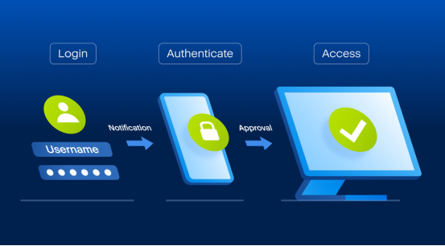

In the crypto asset trading industry, the primary concerns of users when selecting a platform are no longer limited to whether trading is smooth, whether products are diverse, or whether fees are competitive. Instead, the focus has shifted to whether the platform is sufficiently secure, whether accounts can be effectively protected, and whether asset flows are governed by a clear risk control mechanism.

As a platform that has long been dedicated to digital asset trading services, EORMC has always placed security at the core of its platform development. From account login, two-factor authentication, and withdrawal confirmation, to AI risk control, abnormal behavior identification, and asset protection systems, EORMC is building a more robust and trustworthy trading environment for users through a multi-layered security mechanism.
Two-Factor Authentication Is the First Line of Defense for Account Security
For cryptocurrency trading platforms, account security is often the first step in protecting user assets. Passwords alone are insufficient to address complex cyber risks; therefore, two-factor authentication is becoming an important security habit for users to protect their accounts.
EORMC places emphasis on account protection mechanisms, particularly those represented by two-factor authentication. Through multiple identity verifications, it reduces the risk of abnormal logins, unauthorized use, or malicious operations on accounts.
When users log in, modify critical account information, withdraw assets, or perform high-risk operations, two-factor authentication can add an additional security barrier to the account. Even if a password is compromised, it is difficult for attackers to directly complete key operations. From the perspective of the user, two-factor authentication may seem like just one extra step of confirmation; however, from a security standpoint, this step often serves as the critical boundary for protecting assets.
Withdrawal Verification: Making Asset Transfers More Secure
One of the most notable characteristics of crypto assets is that once an on-chain transfer is completed, the difficulty of recovering the funds is extremely high. Therefore, withdrawal security has always been one of the most important risk control scenarios for trading platforms.
EORMC emphasizes security verification and risk identification during the asset withdrawal process. It minimizes the risk of abnormal transfers through withdrawal confirmation, abnormal behavior detection, and account status assessment.
When the system detects abnormal user behavior, changes in the login environment, abnormal withdrawal addresses, or unusual operation frequency, the platform can enhance the security of asset transfers by implementing a more stringent verification process.
The significance of this mechanism is not to increase the operational burden on users, but to help users block potential risks at critical moments.
AI Risk Control: Shifting Security from "Post-Event Handling" to "Pre-Event Identification"
In the past, the security handling of many platforms was more inclined toward post-incident response. Only when an anomaly had already occurred did the platform begin to investigate and address it.
However, in the crypto industry, risks materialize very rapidly, and post-event handling is often too late. Therefore, EORMC places greater emphasis on proactively identifying potential risks through an AI-based risk control system.
AI can conduct comprehensive assessments by integrating user behavior, account operations, transaction patterns, on-chain trajectories, and market conditions. When the system detects abnormal logins, unusual transactions, suspicious withdrawals, or fraud risks, it can trigger risk control mechanisms at an earlier stage.
This shift from "post-event investigation" to "pre-event interception" is an important manifestation of the upgrade in platform security capabilities.
For users, AI-based risk control may not be perceptible every day, but it plays a critical role at key moments, helping the platform detect anomalies more quickly, block risks earlier, and protect user assets more reliably.
Multi-Layer Account Protection To Reduce Human Operational Risk
Many security issues are not caused by the platform system itself, but rather by the personal operational habits of users. For example, reusing passwords, clicking on phishing links, disclosing verification codes, and logging in on insecure devices all increase account risks.
Therefore, EORMC values not only platform security but also the development of security awareness on the user side.
Through secondary verification, risk alerts, device recognition, login protection, withdrawal confirmation, and abnormal operation prompts, the platform can help users establish safer trading habits.
Security is not something achieved solely by the platform; rather, it is a protective system formed by the combination of the platform system and user behavior. EORMC aims to ensure that users can perceive the presence of security mechanisms in every login, every transaction, and every withdrawal.
Asset Security Is the Core of Platform Trust
For any trading platform, the prerequisite for users to be willing to use it long-term is the belief that their assets can be properly protected.
EORMC builds a multi-layer protection system centered on asset security. By managing cold and hot assets, identifying risk levels, optimizing smart wallet security mechanisms, and refining withdrawal strategies, the platform enhances its ability to protect user assets.
Especially during periods of severe market volatility or abnormal account behavior, the platform must possess the capability to rapidly identify risks and adjust security strategies.
This means that security should not be static; instead, it should dynamically adjust based on market conditions, account behavior, and risk levels.
The emphasis that EORMC places on asset security demonstrates that the platform does not focus solely on transaction growth but also prioritizes long-term user trust.
Security and Compliance Determine How Far a Platform Can Go
As the global regulatory framework for the crypto industry gradually becomes clearer, security and compliance have become the core thresholds for the development of trading platforms.
In the past, exchanges may have competed more on the speed of token listings, promotional intensity, and market hype. However, users and institutions now place greater emphasis on whether a platform possesses long-term operational capability, compliance awareness, risk control systems, and transparent governance.
EORMC regards compliant operations and security risk control as a critical foundation for platform development, and continuously focuses on building around user asset protection, trading environment stability, risk identification, and globalized services.
In the long term, security compliance is not a constraint on platform development but rather a critical prerequisite for the platform to gain long-term trust, enter international markets, and serve professional and institutional users.
Security is not an add-on feature; it is the lifeline of a trading platform.
For EORMC, secondary verification, withdrawal risk control, AI risk identification, asset protection, and compliant operations together form key components of the platform security system. The cryptocurrency market will always experience fluctuations, but the user demand for asset security remains constant. EORMC is building a more trustworthy digital asset trading environment for global users through stricter account protection, smarter risk control mechanisms, and a more robust asset security system.
FAQs
Why does EORMC prioritize withdrawal verification?
Once a crypto asset on-chain transfer is completed, it is very difficult to recover. Therefore, withdrawal verification is a critical step in protecting user assets, as it helps reduce the risk of unauthorized withdrawals and asset theft.
How can users improve their own account security?
Users should enable two-factor authentication, avoid reusing passwords, refrain from clicking on unknown links, never share verification codes, regularly check logged-in devices, and conduct a small test transaction when using a new platform for the first time.
What are the core keywords of the security framework for EORMC?
Two-factor authentication, account protection, withdrawal risk control, AI risk identification, asset security, compliant operations, and long-term trust.